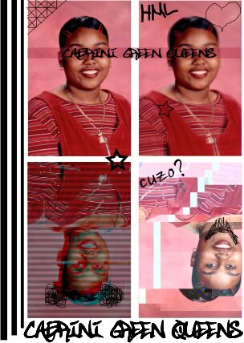

Photogrammetry Tees

Overview
I photographed t-shirts I designed from every angle and rebuilt them as textured 3D models, so they could live in AR inside PopOut.
Process
- Capture: photos of each shirt from many different angles.
- Build the model: load the photos into MeshLab, which turns them into a textured 3D model.
- Export for AR (.dae / .usdz) and bring it into PopOut.
How it started
I wanted to build an AR app with my own 3D models, not stock ones. While working at the Museum of Science and Industry, I'd seen that you could scan a person or an object into a 3D model with a Kinect, the motion sensor from the Xbox. I researched other ways to do it, found photogrammetry and MeshLab, and that's how this started.
I was already studying computer science and comfortable learning new software, and I was always looking for tools to expand my creative practice.
